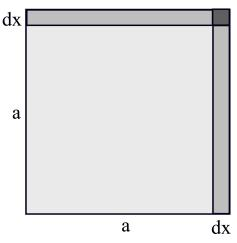
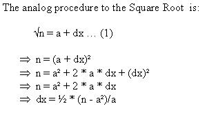

Problem A
R U Kidding Mr. Feynman?
Input: Standard Input
Output: Standard Output
Richard P. Feynman was a
musician, artist, scientist, teacher and Nobel lauriet. He contributed to the development
of the atomic bomb, expanded the understanding of quantumelectrodynamics,
translated Mayan hieroglyphics, and cut to the heart of the Challenger
disaster. But beyond all of that, Richard Feynman was a unique and
multi-faceted individual and he was famous for his unbelievable stories,
unusual life style and his popular books and lectures on mathematics and
physics. Once, in Brazil, Feynman got into a kind of a competition with a
native to see who could do faster simple aritmethics, Feynman or an abacus
(aka an manual calculator machine)! Feynman lost in operations such as addition
and multiplication but he won in cubic roots. Given the number 1729.03
he got the result of 12.002 at the end of a few seconds while his
oponent got 12.0!
|  |  |
Considering an square of side 'a', with area 'a*a', if you do
a small increment of 'dx' on each side , you will get a square with area
of the square with side 'a' (Light gray) plus the area of the two small
rips (Medium Gray) on top plus the area of the small square(dark gray). Since
this is only an approximated method, we can ignore this small area ((dx)²).
Then just get value of dx, and substitute in (1).
Example,
To calculate square root of 17, as Feynman has an excelent memory, he knows
'all' perfect squares (as well cubes), he knows that 4*4 = 16
then he just use the method above and calculate 4+1/8 that equals 4.125
(not very bad as square root of 17= 4.123...)
As Feynman is very
lazy, and he doesn't like subtractions at all, he doesn't use negative dx....
(it's boring.. )
Your Task is to generalize this procedure to the cubic root, and HELP FEYNMAN!
(Just do it, What do you care what other people think?)
The input contains a positive floating-point number per
line in the inteval [1…1000000] (inclusive). The last line of the input
file contains a number 0 (zero), This zero should not be processed.
Output
For each line of input print the value of the cubic root approximated by the method explained above. Print the value rounded upto four digits after the decimal point.
1729.030064.000063.99900 |
12.00244.0000
4.3703 |
Problemsetter: Rui André A. Ferreira